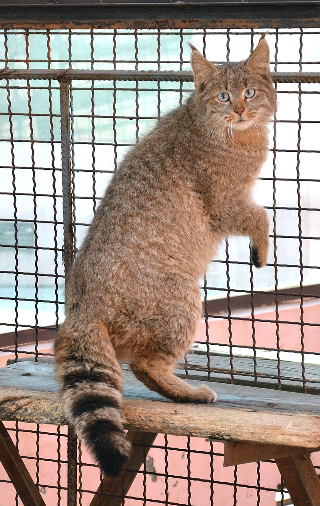

| Animal |
Longévité |
Image et lien wiki |
Définition |
Aliments |
| Rat |
2 a 3ans |
 |
Le mot « rat » est un nom vernaculaire ambigu qui peut désigner, en français, des centaines d'espèces différentes dans le monde de mammifères rongeurs omnivores, dont la queue est nue, les dents tranchantes et le museau pointu.
|
<
td>
| Chat |
12-18 ans |
 |
Chat est un terme ambigu employé en français pour désigner de nombreux félins de taille moyenne ou plus petite, appartenant à la sous-famille des félinés. Employé seul, il s'agit du nom vernaculaire donné au chat domestique (Felis silvestris catus). |
- Viandes
- Croquettes
- Poisson
|
| Tortue |
60-80 ans |
 |
Chat est un terme ambigu employé en français pour désigner de nombreux félins de taille moyenne ou plus petite, appartenant à la sous-famille des félinés. Employé seul, il s'agit du nom vernaculaire donné au chat domestique (Felis silvestris catus). |
- Feuilles
- Fleurs
- Bourgeons
|
| Chien |
10-13ans |
 |
Le Chien (Canis lupus familiaris) est la sous-espèce domestique de Canis lupus (Loup gris), un mammifère de la famille des Canidés (Canidae), laquelle comprend également le dingo, chien domestique retourné à l'état sauvage. |
|